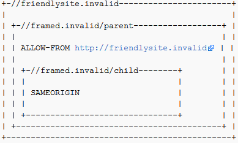

Defending against Clickjacking
There are two main ways to prevent clickjacking:
- Sending the proper Content Security Policy (CSP) frame-ancestors directive response headers that instruct the browser to not allow framing from other domains. (This replaces the older X-Frame-Options HTTP headers.)
- Employing defensive code in the UI to ensure that the current frame is the most top level window
Common Defense Mistakes
Meta-tags that attempt to apply the X-Frame-Options directive DO NOT WORK. For example, <meta http-equiv="X-Frame-Options" content="deny"> will not work. You must apply the X-FRAME-OPTIONS directive as HTTP Response Header as described above.
Limitations
Per-page policy specification: The policy needs to be specified for every page, which can complicate deployment. Providing the ability to enforce it for the entire site, at login time for instance, could simplify adoption.
Problems with multi-domain sites: The current implementation does not allow the webmaster to provide a whitelist of domains that are allowed to frame the page. While whitelisting can be dangerous, in some cases a webmaster might have no choice but to use more than one hostname.
ALLOW-FROM browser support: The ALLOW-FROM option is a relatively recent addition (circa 2012) and may not be supported by all browsers yet. BE CAREFUL ABOUT DEPENDING ON ALLOW-FROM. If you apply it and the browser does not support it, then you will have NO clickjacking defense in place.
Multiple options not supported: There is no way to allow the current site and a 3rd party site to frame the same response. Browsers only honour one X-Frame-Options header and only one value on that header.
Nested Frames don't work with SAMEORIGIN and ALLOW-FROM: In the following situation, the http://framed.invalid/child frame does not load because ALLOW-FROM applies to the top-level browsing context, not that of the immediate parent. The solution is to use ALLOW-FROM in both the parent and child frames (but this prevents the child frame loading if the //framed.invalid/parent page is loaded as the top level document).

X-Frame-Options Deprecated While the X-Frame-Options header is supported by the major browsers, it was never standardized and has been deprecated in favour of the frame-ancestors directive from the CSP Level 2 specification.
Proxies Web proxies are notorious for adding and stripping headers. If a web proxy strips the X-Frame-Options header then the site loses its framing protection.